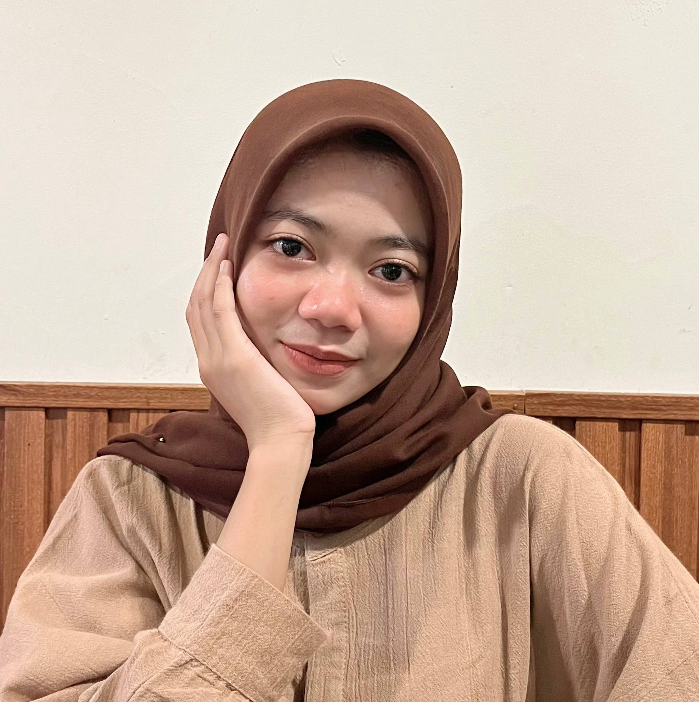
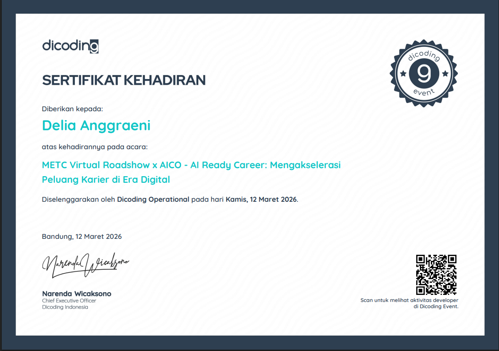
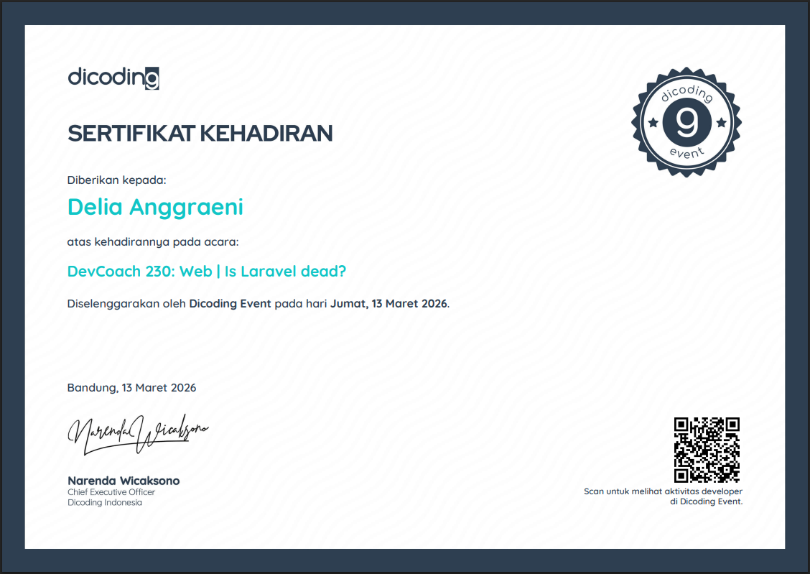

QA & Testing
- Manual testing (functional & UI)
- Test case & checklist
- Bug reporting
- Regression (dasar)
Open for Internship
Mahasiswa Sistem Informasi · Semester 5
Terbiasa memahami kebutuhan sistem dan proses bisnis, menguji kualitas aplikasi, mengolah data, serta mendokumentasikan hasil kerja dengan rapi.

About
Halo! Saya Delia Anggraeni, mahasiswa aktif semester 5 Universitas Amikom Purwokerto jurusan Sistem Informasi. Terbiasa merancang dan menguji aplikasi, memahami kebutuhan sistem, mengolah data, sampai menyusun dokumentasi kerja yang rapi — mencakup QA & testing, analisis sistem & data, hingga pengembangan web.
Terbiasa bekerja mandiri maupun dalam tim, cepat beradaptasi, menjaga detail dari alur utama sampai edge case, dan selalu menyelesaikan pekerjaan dengan dokumentasi yang jelas.
“Belajar dengan tulus tanpa kehilangan diri sendiri.”
Skills
Projects
Proyek kuliah yang saya kerjakan — dari pengembangan, pengujian, sampai dokumentasi hasil. Angka di kartu bisa diperbarui sesuai catatan pengerjaan Anda.
Role: Developer + QA Tester
Mengembangkan dan menguji aplikasi BoostBrain, proyek mata kuliah Pemrograman Mobile. Memverifikasi alur fitur utama dan validasi input, lalu mendokumentasikan temuan sebagai bahan perbaikan dan penyempurnaan aplikasi.
Role: Developer + QA Tester
Mengembangkan dan menguji website BusKita, proyek mata kuliah Teknopreneurship. Memverifikasi navigasi, fungsionalitas form, konsistensi tampilan antar halaman, serta menyusun dokumentasi hasil pengujian.
Role: Developer + QA Tester
Mengembangkan dan menguji website Barkasiwa, proyek mata kuliah Pemrograman Web. Menguji fitur end-to-end, membandingkan hasil aktual dengan hasil yang diharapkan, serta mendokumentasikan bug sebagai bahan evaluasi dan perbaikan.
Certificates
Seminar, webinar, dan event yang pernah saya ikuti.

Dicoding Operational - Seminar

Dicoding Event - Seminar
Experience
2025 — 2026
Berpartisipasi dalam kegiatan asisten: kolaborasi tim, komunikasi, dan dokumentasi. Membentuk kebiasaan teliti, rapi dalam catatan, serta siap mendukung proses review kualitas.
Education
S1 Sistem Informasi · Semester 5 · Aktif
2020 — 2023
Contact
Hubungi saya untuk kesempatan magang di bidang Sistem Informasi — QA & testing, analisis sistem/data, hingga pengembangan web.